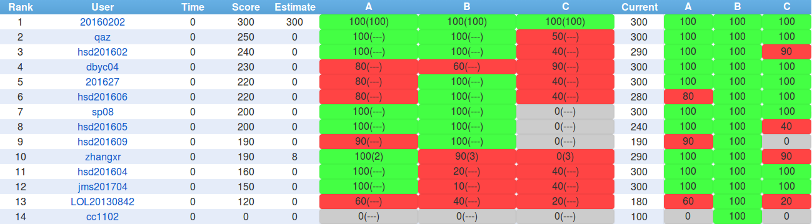
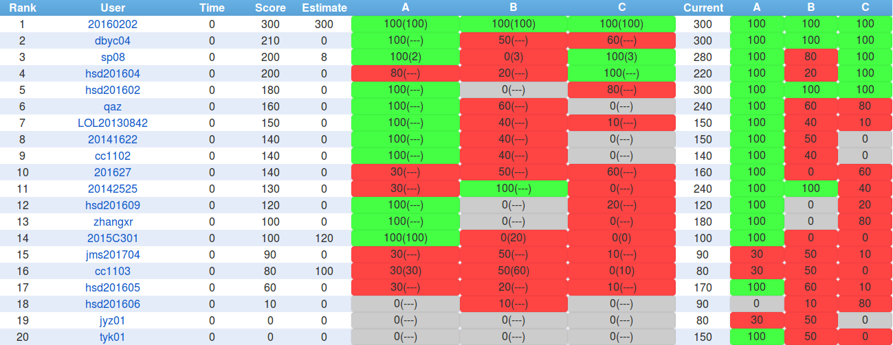

目录
- 引言
- # 东北师大附中2017.9.7 NOIP模拟赛总结
- 题目
- 名次
- 题解
- 官方题解
- A.Cyl
- 题目分析
- 代码
- B.RoundTrip
- 题目分析
- 代码
- C.Graph
- 题目分析
- 代码
- 总结
- 东北师大附中2017.9.9 NOIP模拟赛总结
- 题目
- 名次
- 题解
- A.公约数
- 题目分析
- 官方题解
- 代码
- B.树上路径
- 题目分析
- 官方题解
- 代码
- C.飞扬的小鸟
- 题目分析
- 官方题解
- 代码
- 总结
引言
NOIP即将到来，又是新的轮回，不知今年会怎么样……
# 东北师大附中2017.9.7 NOIP模拟赛总结
题目
名次

题解
官方题解
A.Cyl
题目分析
我们看到数据范围以后，就知道这题一定不是暴搜了对吧，然后，我们模拟操作几下，就能够发现，本题实际上就是一个情况讨论题，我们对如下三种形式的数分别进行讨论:$3k + 1, 3k + 2, 3k + 3$，得出在$n$和$m$是这三种数两两组合的情况，然后直接讨论即可，应该比较简单
但是，我们又发现，当$n$, $m$过小时，上面的规律不再使用，因为用于平衡掉余数的空间不够大，它需要往回翻，所以，对于较小的$1, 2, 3$我们再分别特殊手算一下即可
吐槽：本题没说立方体不能有一半在外面啊！！！棱不是接触就行吗？？？
不然本题就A了。。。
代码
1 2 3 4 5 6 7 8 9 10 11 12 13 14 15 16 17 18 19 20 21 22 23 24 25 26
| #include <cstdlib> #include <cstdio> #include <algorithm> #define LL long long int using namespace std; int main(){ LL n, m; scanf("%lld%lld", &n, &m); if (n > m) swap(n, m); if (n == 1){ if (m % 3 == 1) printf("%lld", (m - 1) / 3 * 2); else printf("-1"); } else if (n == 2){ if (m % 3 == 1) printf("%lld", (m - 1) / 3 * 2 + 1); else printf("-1"); } else if (n == 3){ if (m == 3) printf("8"); else if (m % 3 == 1) printf("%lld", (n - 1) / 3 * 2 + (m - 1) / 3 * 2 + (n - 1) % 3 + (m - 1) % 3); else printf("%lld", (n - 1) / 3 * 2 + (m - 1) / 3 * 2 + (n - 1) % 3 + (m - 1) % 3 + 2); } else printf("%lld", (n - 1) / 3 * 2 + (m - 1) / 3 * 2 + (n - 1) % 3 + (m - 1) % 3); return 0; }
|
B.RoundTrip
题目分析
我们发现这道题好像是一个经典问题，我们显然要先用Tarjan缩点，把图变成一个DAG，然后加边
因为时间不够，所以我乱讨论了一番，十分地麻烦，然后就WA了。。。
实际上有一种很简单的统计方法，我们可以发现，直接分别统计出度与入度为零的点的个数就可以，然后取个MAX，这样保证存在加边方案满足题意（想一想为什么？）
这样本题就解决了。。。
代码
1 2 3 4 5 6 7 8 9 10 11 12 13 14 15 16 17 18 19 20 21 22 23 24 25 26 27 28 29 30 31 32 33 34 35 36 37 38 39 40 41 42 43 44 45 46 47 48 49 50 51 52 53 54 55 56 57 58 59 60 61 62 63 64 65 66 67 68 69 70 71 72 73 74 75 76 77 78 79 80 81 82 83 84 85 86 87 88 89 90 91 92 93
| #include <cstdlib> #include <cstdio> #include <algorithm> #include <stack> #include <cctype> #define maxn 100005 #define maxm 1000005 using namespace std; int n, m; struct edge{ int next, to; edge(int next, int to) : next(next), to(to){} edge(){} }e[maxn << 1]; int h[maxn], cnt = 1; void Add_Edge(int fr, int to){ e[++cnt] = edge(h[fr], to); h[fr] = cnt; } int low[maxn]; int pre[maxn]; int sccno[maxn]; bool vis[maxn]; int ct = 0; int t; stack<int> s; int Tarjan(int x, int fa){ pre[x] = low[x] = ++t; vis[x] = 1; s.push(x); for (int i = h[x]; i; i = e[i].next){ int op = e[i].to; if (op == fa) continue; if (!vis[op]) low[x] = min(low[x], Tarjan(op, x)); else if (!sccno[op]) low[x] = min(low[x], low[op]); } if (low[x] == pre[x]){ ++ct; int op = s.top(); s.pop(); while (op != x){ sccno[op] = ct; op = s.top(); s.pop(); } sccno[x] = ct; } return low[x]; } int in[maxn]; int out[maxn]; template<class T> void read(T& x){ char ch = getchar(); while (!isdigit(ch)) ch = getchar(); x = 0; while (isdigit(ch)) x = 10 * x + ch - '0', ch = getchar(); } int main(){ int x, y; read(n), read(m); for (int i = 1; i <= m; i++){ read(x), read(y); Add_Edge(x, y); } for (int i = 1; i <= n; i++) if (!vis[i]) Tarjan(i, i); if (ct == 1) { printf("0"); return 0; } for (int i = 1; i <= n; i++){ for (int j = h[i]; j; j = e[j].next){ int op = e[j].to; if (sccno[i] == sccno[op]) continue; out[sccno[i]]++; in[sccno[op]]++; } } int ans1 = 0; int ans2 = 0; for (int i = 1; i <= ct; i++){ ans1 += (!out[i]); ans2 += (!in[i]); } printf("%d", max(ans1, ans2)); return 0; }
|
C.Graph
题目分析
本题真的是一个黑科技啊。。。居然还有这样的操作。。。
我们发现，本题如果暴力处理肯定会挂，于是我们采用特殊的方法，先观察答案路径的性质：
- 路径上只有两个关键点，且是路径的两个端点
- 长度最小
于是，我们通过第一条性质，可以对每个点暴力SPFA，搜到一个关键点就停下来，然后更新答案， 用一个栈保存更新过的结点，然后只清空这些栈中的结点距离（其实在下一场的总结中有一种技巧可以避免这样做）
然后就拿了90分。。。后来发现源点忘了入栈了，改过来就A了
—————-上面是我的方(bao)法(li)，不要被它蒙蔽了双眼。。。—————-
正解是二进制分组+多源多汇最短路(你是在跑网络流吗)
我第一次知道最短路还可以这样跑。。。其实大家都觉得二进制分组是看点，但是我觉得这种跑最短路的方法才真的应该铭记。。。
二进制分组就是按照点的标号的某一位的数(0或1）进行左右分组，对每一位都这样做，就必然可以找出答案（因为答案的两个点的标号必然不同）
然后我们新建源点与汇点，连长度为1的边，就可以狂跑最短路啦
其实分组怎么分都行。。。zgz随机化分组随手碾标程。。。
那么代码如下：
代码
注意这是我的方(bao)法(li)，不喜勿喷:
1 2 3 4 5 6 7 8 9 10 11 12 13 14 15 16 17 18 19 20 21 22 23 24 25 26 27 28 29 30 31 32 33 34 35 36 37 38 39 40 41 42 43 44 45 46 47 48 49 50 51 52 53 54 55 56 57 58 59 60 61 62 63 64 65 66 67 68 69 70 71 72 73 74 75 76 77 78 79 80 81 82 83 84 85 86 87 88 89 90 91 92 93
| #include <cstdlib> #include <cstdio> #include <algorithm> #include <stack> #include <cctype> #define maxn 100005 #define maxm 1000005 using namespace std; int n, m; struct edge{ int next, to; edge(int next, int to) : next(next), to(to){} edge(){} }e[maxn << 1]; int h[maxn], cnt = 1; void Add_Edge(int fr, int to){ e[++cnt] = edge(h[fr], to); h[fr] = cnt; } int low[maxn]; int pre[maxn]; int sccno[maxn]; bool vis[maxn]; int ct = 0; int t; stack<int> s; int Tarjan(int x, int fa){ pre[x] = low[x] = ++t; vis[x] = 1; s.push(x); for (int i = h[x]; i; i = e[i].next){ int op = e[i].to; if (op == fa) continue; if (!vis[op]) low[x] = min(low[x], Tarjan(op, x)); else if (!sccno[op]) low[x] = min(low[x], low[op]); } if (low[x] == pre[x]){ ++ct; int op = s.top(); s.pop(); while (op != x){ sccno[op] = ct; op = s.top(); s.pop(); } sccno[x] = ct; } return low[x]; } int in[maxn]; int out[maxn]; template<class T> void read(T& x){ char ch = getchar(); while (!isdigit(ch)) ch = getchar(); x = 0; while (isdigit(ch)) x = 10 * x + ch - '0', ch = getchar(); } int main(){ int x, y; read(n), read(m); for (int i = 1; i <= m; i++){ read(x), read(y); Add_Edge(x, y); } for (int i = 1; i <= n; i++) if (!vis[i]) Tarjan(i, i); if (ct == 1) { printf("0"); return 0; } for (int i = 1; i <= n; i++){ for (int j = h[i]; j; j = e[j].next){ int op = e[j].to; if (sccno[i] == sccno[op]) continue; out[sccno[i]]++; in[sccno[op]]++; } } int ans1 = 0; int ans2 = 0; for (int i = 1; i <= ct; i++){ ans1 += (!out[i]); ans2 += (!in[i]); } printf("%d", max(ans1, ans2)); return 0; }
|
这是正解:
1 2 3 4 5 6 7 8 9 10 11 12 13 14 15 16 17 18 19 20 21 22 23 24 25 26 27 28 29 30 31 32 33 34 35 36 37 38 39 40 41 42 43 44 45 46 47 48 49 50 51 52 53 54 55 56 57 58 59 60 61 62 63 64 65 66 67 68 69 70 71 72 73 74 75 76 77 78 79 80 81 82 83 84 85 86 87 88 89 90 91 92 93 94 95 96 97 98 99 100 101 102 103 104 105 106 107 108 109 110 111 112
| * Author : ztx * Title : std-graph * ALG : 最短路 * CMT : 按照二进制拆分进行log(n)次最短路 * Time : 2016-10-19 \****************************************/ #include <cstdio> #define Rep(i,l,r) for(i=(l);i<=(r);i++) #define rep(i,l,r) for(i=(l);i< (r);i++) #define Rev(i,r,l) for(i=(r);i>=(l);i--) #define rev(i,r,l) for(i=(r);i> (l);i--) typedef long long ll ; typedef double lf ; int CH , NEG ; template <typename TP>inline void read(TP& ret) { ret = NEG = 0 ; while (CH=getchar() , CH<'!') ; if (CH == '-') NEG = true , CH = getchar() ; while (ret = ret*10+CH-'0' , CH=getchar() , CH>'!') ; if (NEG) ret = -ret ; } template <typename TP>inline void readc(TP& ret) { while (ret=getchar() , ret<'!') ; while (CH=getchar() , CH>'!') ; } template <typename TP>inline void reads(TP *ret) { ret[0]=0;while (CH=getchar() , CH<'!') ; while (ret[++ret[0]]=CH,CH=getchar(),CH>'!') ; ret[ret[0]+1]=0; } #include <cstring> #include <deque> #define maxn 100010LL #define maxm 500010LL #define maxk 233330LL int e[3][(maxm<<1)+maxn], star[maxn], tote = 1; int rstar[maxn], rtote; #define to(p) e[0][p] #define nxt(p) e[1][p] #define len(p) e[2][p] #define ft q.front() #define bk q.back() #define pf(x) q.push_front(x) #define pb(x) q.push_back(x) #define pop q.pop_front() #define infi 0x3f3f3f3fLL inline void AddEdge(int u,int v,int w) { tote ++ , to(tote) = v, len(tote) = w, nxt(tote) = star[u], star[u] = tote; } int n, m, s; int S[maxk]; int dis[maxn]; bool inq[maxn]; std::deque<int>q; inline void work() { int i, k, u, v, w, p, ans; Rep (i,1,m) read(u), read(v), read(w), AddEdge(u,v,w), AddEdge(v,u,w); memcpy(rstar,star,sizeof star); rtote = tote; Rep (i,1,s) read(S[i]); ans = infi; rep (k,0,20) { memcpy(star,rstar,sizeof rstar); tote = rtote; Rep (i,1,s) if (S[i]&(1<<k)) AddEdge(n+1,S[i],0); else AddEdge(S[i],n+2,0); q.clear(); memset(dis,0x3f,sizeof dis); dis[n+1]=0; pb(n+1); while (!q.empty()) for (u=ft,pop,inq[u]=false,p=star[u];p;p=nxt(p)) if (v=to(p),dis[u]+len(p)<dis[v]) if (dis[v]=dis[u]+len(p),!inq[v]) if (inq[v]=true,!q.empty()&&dis[v]<dis[ft]) pf(v); else pb(v); if (dis[n+2] < ans) ans = dis[n+2]; } printf("%d\n", ans); } int main() { #define READ #ifdef READ freopen("graph.in" ,"r",stdin ) ; freopen("graph.out","w",stdout) ; #endif while (scanf("%d%d%d", &n, &m, &s) != EOF && n+m+s>0) work(); #ifdef READ fclose(stdin) ; fclose(stdout) ; #else getchar() ; getchar() ; #endif return 0 ; }
|
总结
本次题目较为简单， 但未能取得高分，原因有三点：一是题面叙述不够清楚，二是时间安排不够合理，在思考题目上花费了较多时间，导致检查时间不够，三是知识欠缺，未能用正确的方法通过问题
东北师大附中2017.9.9 NOIP模拟赛总结
题目
名次

题解
A.公约数
题目分析
自己在做的时候，感觉这题以前好像做过，然后好像是一个不等关系，然后能推出来一堆东西，于是就按照这个思路试了一下，先写了一个找规律的程序，把所有可能的对都打了出来，然后观察了一会，发现数对都是这样的形式（假设$c = gcd(a,b)$）：
但是在后面还有一些不太满足这个规律的，然后就想在二进制意义下各种乱搞证明。。。
于是就。。。浪费了大把的时间
后来还是想回到最开始的思路上，直接用不等关系证明，于是瞬间就推了出来。。。如下（不妨设$x \geq y$）：
所以，我们就知道了：$x = y + gcd(x, y)$
上面的规律到此就被证明了，于是我们就此以及调和级数定理设计一个“枚举”算法：先枚举gcd，然后里面扫描每一个数，判断是否有$x \oplus (x + gcd) = gcd$即可
这样本题就在$O(n \log n)$内解决了
同时，我们把上面用到的一个不等式：
称作异或不等式，便于以后的应用
给我的启示就是，有题快做，一定不要死扣证明，如果实在拿不准就先做别的题，这样才是真正的noip模拟
官方题解
代码
居然这么**短。。。
1 2 3 4 5 6 7 8 9 10 11 12 13 14 15 16 17
| #include <cstdlib> #include <cstdio> #include <algorithm> using namespace std; int n, ans; int main(){ scanf("%d", &n); for (int d = 1; d <= (n >> 1); d++){ for (int i = d; i <= n - d; i += d){ if ((i ^ (i + d)) == d) ans++; } } printf("%d", ans); return 0; }
|
B.树上路径
题目分析
本题看上去就是一个点分治，一开始以为二分，然后就反应过来直接点分治就可以，那么具体细节就不说了，还是注意全局变量的可变性，注意清空用完的数组变量等，注意判断点是否已经被访问过，以及注意多重循环嵌套时不要使用重复的循环变量等等。。。
但是，这次这些问题都没有犯，而是犯了STL错误：set决不能使用STL的二分查找，只能使用自己的成员函数，还有一点错误，就是不要考察每个长度，只需要考虑二分后最短的原先存在的长度加上当前正在考虑的这条链的长度是否在范围内就可以，否则复杂度就是$O(n^2\log^2 n)$的了，这种细节都要注意
官方题解
代码
1 2 3 4 5 6 7 8 9 10 11 12 13 14 15 16 17 18 19 20 21 22 23 24 25 26 27 28 29 30 31 32 33 34 35 36 37 38 39 40 41 42 43 44 45 46 47 48 49 50 51 52 53 54 55 56 57 58 59 60 61 62 63 64 65 66 67 68 69 70 71 72 73 74 75 76 77 78 79 80 81 82 83 84 85 86 87 88 89 90 91 92 93 94 95 96 97 98 99 100 101 102 103 104 105 106 107 108 109 110 111 112 113 114 115
| #include <cstdlib> #include <cstdio> #include <algorithm> #include <set> #include <cctype> #define maxn 1000005 #define INF 2000000005 using namespace std; int n, s, t; struct edge{ int next, to, len; edge(int next, int to, int len) : next(next), to(to), len(len){} edge(){} }e[maxn << 1]; int h[maxn], cnt = 1; void Add_Edge(int x, int y, int len){ e[++cnt] = edge(h[x], y, len); h[x] = cnt; e[++cnt] = edge(h[y], x, len); h[y] = cnt; } bool vis[maxn]; int siz[maxn]; int g; int as; void DFS1(int x, int fa){ bool f = 1; siz[x] = 1; for (int i = h[x]; i; i = e[i].next){ int op = e[i].to; if (vis[op] || op == fa) continue; DFS1(op, x); siz[x] += siz[op]; if (siz[op] > (as >> 1)) f = 0; } if (as - siz[x] > (as >> 1)) f = 0; if (f) g = x; } int d[maxn]; set<int> s1; int s2[maxn]; int ct2 = 0; void DFS2(int x, int fa){ s2[++ct2] = d[x]; for (int i = h[x]; i; i = e[i].next){ int op = e[i].to; if (op == fa || vis[op]) continue; d[op] = d[x] + e[i].len; DFS2(op, x); } } int ans = INF; void DAC(int x){ int ns = as; DFS1(x, x); x = g; s1.insert(0); for (int i = h[x]; i; i = e[i].next){ int op = e[i].to; if (vis[op]) continue; d[op] = e[i].len; DFS2(op, x); for (int j = 1; j <= ct2; j++){ set<int> :: iterator it1 = s1.lower_bound(s - s2[j]); int d = s2[j] + (*it1); if (s <= d && d <= t) ans = min(ans, d); } for (int j = 1; j <= ct2; j++) s1.insert(s2[j]); ct2 = 0; } s1.clear(); vis[x] = 1; for (int i = h[x]; i; i = e[i].next){ int op = e[i].to; if (vis[op]) continue; if (siz[op] > siz[x]) as = ns - siz[x]; else as = siz[op]; DAC(op); } } template<class T> void read(T& x){ char ch = getchar(); bool f = 1; x = 0; while (!isdigit(ch) && ch != '-') ch = getchar(); if (ch == '-') f = 0, ch = getchar(); while (isdigit(ch)) x = 10 * x + ch - '0', ch = getchar(); if (!f) x = -x; } int main(){ int x, y, z; read(n), read(s), read(t); for (int i = 1; i < n; i++){ read(x), read(y), read(z); Add_Edge(x, y, z); } as = n; DAC(1); if (ans < INF) printf("%d", ans); else printf("-1"); return 0; }
|
C.飞扬的小鸟
题目分析
我们一看完题，就可以联想到SCOI的一道修车题，这两道题看上去简直是一毛一样的，于是我也几乎写了一毛一样的代码，然后就华丽的TLE了。。。
后来仔细地看了看，数据范围好像不太一样。。。这道题的范围好像很难承受，于是就水了题解。。。发现这题竟然使用了动态加边的技巧，然而以前从来没写过。。。都不知道怎么动态加边，于是又水了一发标程，于是就学会了
然而调了半天没搞出来，最后发现是点的标号有问题，标的有重复，然后就一直玄学地TLE。。。改完就过了
但是学到了新的东西，还是很开心的，这样动态加边也算是写过了，同时还学到一个东西：在多次SPFA的时候不必重新设定数组，而是新开一个标记数组表示这是第几次SPFA就可以了，可以节约许多的时间
官方题解
代码
一开始以为是最大流，顺手就打出来了，然后发现不是，就又写了费用流。。。
1 2 3 4 5 6 7 8 9 10 11 12 13 14 15 16 17 18 19 20 21 22 23 24 25 26 27 28 29 30 31 32 33 34 35 36 37 38 39 40 41 42 43 44 45 46 47 48 49 50 51 52 53 54 55 56 57 58 59 60 61 62 63 64 65 66 67 68 69 70 71 72 73 74 75 76 77 78 79 80 81 82 83 84 85 86 87 88 89 90 91 92 93 94 95 96 97 98 99 100 101 102 103 104 105 106 107 108 109 110 111 112 113 114 115 116 117 118 119 120 121 122 123 124 125 126 127 128 129 130 131 132 133 134 135 136 137 138 139 140 141 142 143 144 145 146 147 148 149 150 151 152 153 154 155 156 157 158 159 160 161 162 163 164 165 166 167 168 169 170 171 172 173 174 175 176 177 178 179 180 181 182 183 184 185 186 187 188 189 190 191 192 193 194 195 196 197 198 199
| #include <cstdlib> #include <cstdio> #include <algorithm> #include <cctype> #include <queue> #define maxn2 105 #define maxm2 205 #define maxn 100005 #define maxm 10000005 #define INF 2000000005 using namespace std; struct edge{ int next, to, flow; edge(int next, int to, int flow) : next(next), to(to), flow(flow){} edge(){} }e[maxm << 1]; int h[maxn], cnt = 1; void Add_Edge(int fr, int to, int flow){ e[++cnt] = edge(h[fr], to, flow); h[fr] = cnt; e[++cnt] = edge(h[to], fr, 0); h[to] = cnt; } bool BFS(){ queue<int> bfs; bfs.push(s); memset(d, 0, sizeof(d)); while (!bfs.empty()){ int op = bfs.front();bfs.pop(); for (int i = h[op]; i; i = e[i].next){ if (!e[i].flow) continue; int k = e[i].to; if (k == s || d[k]) continue; d[k] = d[op] + 1; bfs.push(k); } } if (!d[t]) return false; return true; } int DFS(int x, int a){ if (x == t) return a; int rest = a; for (int i = h[x]; i; i = e[i].next){ if (!e[i].flow) continue; int op = e[i].to if (d[op] != d[x] + 1) continue; int k = DFS(op, min(rest, e[i].flow)); e[i].flow -= k; e[i ^ 1].flow += k; rest -= k; if (!rest) return a; } return a - rest; } void Dinic(int& maxflow){ while (BFS()) maxflow += DFS(s, INF); }*/ int n, m, s, t; int p2[maxn2]; int geo[maxn2][maxm2]; struct edge{ int next, to, flow, cost; edge(int next, int to, int flow ,int cost) : next(next), to(to), flow(flow), cost(cost){} edge(){} }e[maxm << 1]; int h[maxn], cnt = 1; void Add_Edge(int fr, int to, int flow, int cost){ e[++cnt] = edge(h[fr], to, flow, cost); h[fr] = cnt; e[++cnt] = edge(h[to], fr, 0, -cost); h[to] = cnt; } int p[maxn]; int d[maxn]; bool vis[maxn]; int dt[maxn]; int ti = 0; int spfa[maxn]; int l, r; bool SPFA(){ l = 0, r = -1; spfa[++r] = s; vis[s] = 1; d[s] = 0; dt[s] = ++ti; while (l <= r){ int op = spfa[l++]; for (int i = h[op]; i; i = e[i].next){ if (!e[i].flow) continue; int k = e[i].to; if (dt[k] != ti || d[k] > d[op] + e[i].cost){ p[k] = i; dt[k] = ti; d[k] = d[op] + e[i].cost; if (!vis[k]) spfa[++r] = k, vis[k] = 1; } } vis[op] = 0; } if (dt[t] != ti) return false; return true; } int sum = 0; int rec[maxn]; int pos[maxn]; void Augment(int& maxflow, int& mincost){ int now = t, flow = INF; while (now != s){ int k = p[now]; flow = min(flow, e[k].flow); now = e[k ^ 1].to; } now = t; while (now != s){ int k = p[now]; e[k].flow -= flow; e[k ^ 1].flow += flow; now = e[k ^ 1].to; } maxflow += flow, mincost += flow * (d[t] - d[s]); now = t; if (!e[p[now]].flow && now != t - 1){ now = e[p[now] ^ 1].to; rec[pos[now + 1]]++; for (int i = 1; i <= n; i++){ Add_Edge(i, now + 1, 1, rec[pos[now + 1]] * geo[i][pos[now + 1]]); } Add_Edge(now + 1, t, 1, 0); } } void MCMF(int& maxflow, int& mincost){ while (SPFA()) Augment(maxflow, mincost); } template<class T> void read(T& x){ char ch = getchar(); bool f = 1; x = 0; while (!isdigit(ch) && ch != '-') ch = getchar(); if (ch == '-') f = 0, ch = getchar(); while (isdigit(ch)) x = 10 * x + ch - '0', ch = getchar(); if (!f) x = -x; } int main(){ int x, y; read(n), read(m); s = 0; for (int i = 1; i <= n; i++) read(p2[i]), sum += p2[i], Add_Edge(s, i, p2[i], 0); for (int i = 1; i <= n; i++){ for (int j = 1; j <= m; j++){ read(geo[i][j]); } } for (int i = 1; i <= n; i++){ for (int j = 1; j <= m; j++){ rec[j] = 1; Add_Edge(i, (j - 1) * sum + 1 + n, 1, geo[i][j]); } } for (int i = 1 + n; i <= sum * m + n; i++){ pos[i] = (i - 1 - n) / sum + 1; } t = n + sum * m + 1; for (int j = 1; j <= m; j++){ Add_Edge((j - 1) * sum + 1 + n, t, 1, 0); } int maxflow = 0, mincost = 0; MCMF(maxflow, mincost); printf("%d", mincost); return 0; }
|
总结
本次题目难度不大，但是技巧性强，没能拿到高分的确是一种失误，注意日后的模拟要严格按照真实考试模式进行，尽可能节约时间，并尽快写完，调试代码

![]()